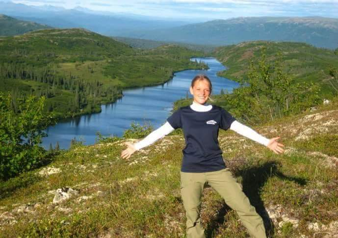

Danielle Andrews
Hello there! Welcome to my website.

I was born and raised in the United States and have spent most of my life here. I am a fan of travelling, so I have been to many other countries. A short list of places I have been that are outside the US include: Germany, Thailand, Ireland, and Scotland. Before starting Per Scholas, I graduated from university as a mechanical engineer in December 2018, worked as a mechanical engineer – the engineering manager of a team of 3 – for a couple of years, and I started teaching myself to code.
I also enjoy watching birds. So, for your enjoyment, here is a YouTube video of the Cornell live bird cam!